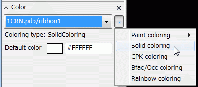
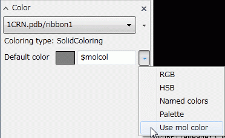
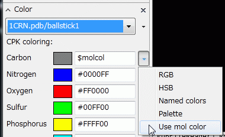
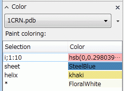

MolColor
分子に対する着色¶
着色という概念¶
着色という概念は，チュートリアルDocuments/GUIのチュートリアル(CueMol2)/Step7でも説明されている通り，Rendererに対して適応することで，それに応じてRendererがObjectを着色して表示するというものでした．
どういう場合に必要なのか¶
しかし，Rendererではなく分子オブジェクト(MolCoord)ごとに色が決まっている場合が多く， １つの分子に対して複数のrendererがある場合， それぞれが統一性が取れた色遣いになるようにするには， 各々のRendererに対して同色を一つ一つ設定してやる必要がありました． これでは面倒です．
そこで，バージョン2.0.1.207では，新しく分子に対する着色，という機能を実装しました． 分子に対して大元となる着色を指定しておき， 随時Renderer側で「$molcol」という特殊キーワードを指定することで， 分子側の設定を参照できます． これで，必要に応じて分子で決まっている統一した着色を行うことができるわけです．
以下で実例を挙げて具体的な使い方を説明します．
具体例で解説¶
以下では，crambin 1CRN.pdbを使用して具体的に説明します． サンプルファイルは，
になります．
Colorパレットで分子を選択¶
従来，ColorパレットではDocuments/GUIのチュートリアル(CueMol2)/Step7にあるように rendererしか選択できませんでしたが，バージョン2.0.1.207以降では以下のように object (但し分子に限る)もリストに現れ，選択できるようになりました．
{kind=link}
例えば，1CRN.pdbという分子を読み込んでribbon表示にした場合， 以上のように，「1CRN.pdb/ribbon1」以外に「1CRN.pdb」という項目も表示されるわけです．
ここで，「1CRN.pdb」（分子object）を選択すると，分子に対する着色を編集できます． （デフォルトでは，Paint coloringで二次構造で色分けする状態になっています）
以下では，まずこのデフォルトの着色はデフォルトのまま置いておいて， 分子の色をどのようにしてrendererから参照するかを説明します．
分子の色をribbon rendererから参照¶
まず，既にあるribbon rendererから分子色を参照するように変更します．
下図のように，Colorパレットで1CRN.pdb/ribbon1を選択し，右のプルダウンメニューからSolid coloringというのを選択します．すると，分子グラフィクスの方は白一色のribbon表示になります．

そして次に，Default color項目の設定で，下図のように「Use mol color」という項目を選択します．

$molcolという文字が入り，色は灰色になります（メニューを使わずに$molcolという文字を直接入れても同じ）．
GUIの部分の色は灰色になりますが，実際のribbon rendererの方の色は， 分子の着色が反映されて，二次構造ごとの着色になります． （ただ，元から二次構造ごとの着色になっていたため一見色に変化はないように見えますが．．．）
分子の色をballstick rendererから参照¶
さらに，1CRN.pdbに対してさらにballstick rendererを作成します． デフォルトではCPK coloringになっているため，図のような表示になるでしょう．
{kind=link}
ここで，例えば炭素原子の色のみ，主鎖のリボン表示に合わせたいとします． 従来では，CPK coloringでは元素ごとにしか着色できなかった為， 炭素の色を変更すると，全部の炭素原子の色を変えることしかできませんでした．
以下のように，炭素の色の設定で「Use mol color」という項目を選択します．

GUIの部分の色は灰色になりますが，グラフィクスのballstick rendererの炭素原子の色は， 下図のように主鎖のリボンと同じ色になります．
{kind=link}
分子の着色を変更する¶
次に，分子の着色を変更し，$molcolを使用しているrendererでの変化を見てみましょう． Colorパレットで，再び1CRN.pdbを選びます．そして，1〜10番の残基をピンク色に設定します．（具体的な方法はDocuments/GUIのチュートリアル(CueMol2)/Step8を参照）

すると，分子グラフィクスの方は下図のように変化します．
{kind=link}
残基番号１〜１０番のribbon表示だけでなく，ballstick表示の炭素原子の色のみ変化していることが分かります． （ここまで操作した状態のqscファイルが，サンプルファイルmolcol_sample1.qscです）
さらに例えば，分子の着色をrainbow coloringに変更すると，下図のようにribbonだけでなくballstickも 色が変化します．
{kind=link}
論文の図とか¶
以上の例からわかると思いますが，例えばよくある論文の図等だと，
- 分子にドメインや機能部位ごとに，paint coloringを使用して色を設定しておく
- 主鎖をリボン表示にし，リボン表示の方はsolid coloringで$molcolを指定しておく（上述のribbon rendererの設定と同じ）
- 重要な部分についてballstick表示を作成する．CPK coloringで炭素原子の色を$molcolにする
で全体的に統一した着色の図が作成できます．
その他¶
修飾子の指定¶
分子色（$molcol）も，他の色表記と同様に修飾子をつけて色を変化させることができます． 例えば，炭素の色を主鎖の色より薄く（あるいは濃く）したい場合は，CPK coloringの炭素色のところに
$molcol{mod_s:-0.5}
と指定します． すると，下図のような着色になります．
{kind=link}
この例では，分子着色で指定した色のsaturation (色の明るさ，１が純色，０が白）値から0.5を引いた値をCPK rendererの炭素の色として指定していることになります．（上図の状態がサンプルファイルmolcol_sample2.qscになります）
色の修飾子については，詳しくはcuemol2/ColorSyntaxを参照してください．